EVE-NG Linux VM SSH troubleshooting¶

Special thanks to Carlo Cianfarani for providing this post.
In this post we will explore how to troubleshoot and fix an issue on EVE-NG involving Linux VMs connected through a virtual router instance (Cisco XRd) implemented as docker container. Some time ago, indeed, I managed to extend EVE-NG to support docker containers.
Lab scenario¶
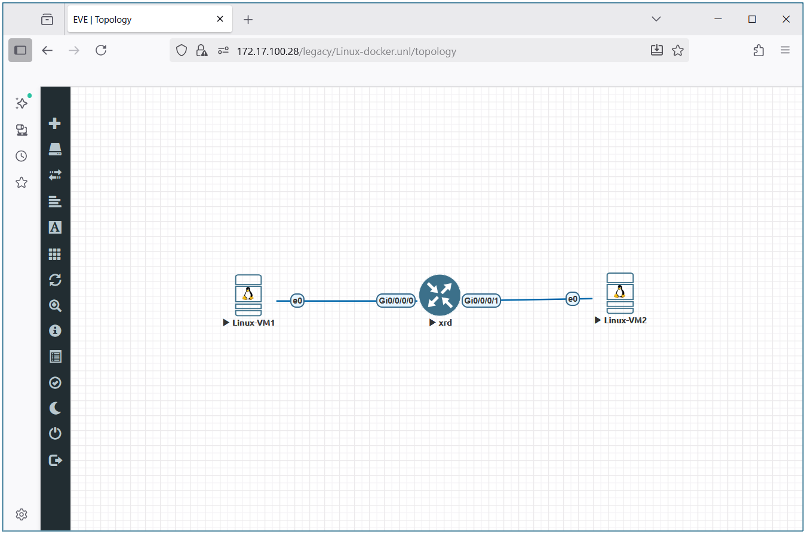
In the scenario depicted, Linux VM ethernet interfaces (e.g. plain e1000 or paravirtualized virtio-net) are attached to two different IP subnets, each implemented by a Linux bridge. Linux VMs run on QEMU hypervisor which, at userspace level, starts a multithreaded process for each VM. Essentially, there is a main thread plus additional threads, one for each VM’s assigned vCPU.
We can check how EVE-NG networking is implemented under the hood by using:
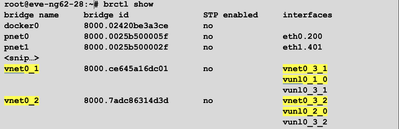
In the above vnet0_1 and vnet0_2 are both Linux bridge implementing ethernet links connecting the VMs to the virtual router’s interfaces. vunl0_1_0 and vunl0_2_0 are Linux TAP network devices implementing the VM virtual ethernet interfaces’ backend.
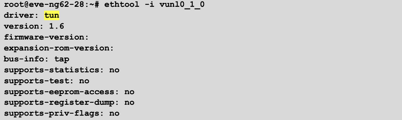
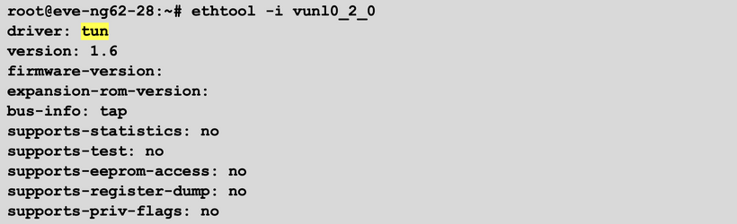
vnet0_3_1 and vnet0_3_2 on the other hand are Linux veth network devices where the paired veth lives inside the docker container’s network namespace.
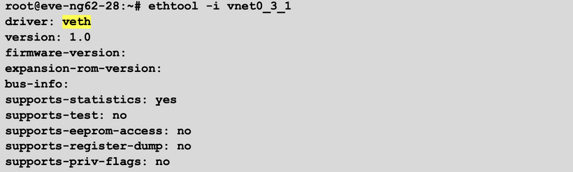
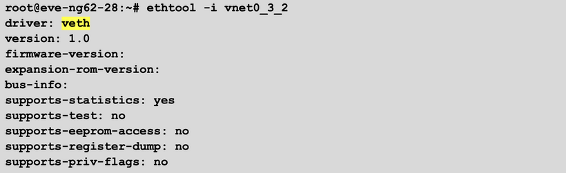
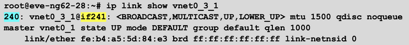
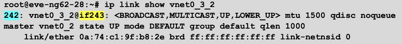
The following command enters the XRd container’s namespaces (PID, network and User) and confirms the associations between veth pairs.
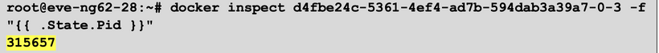
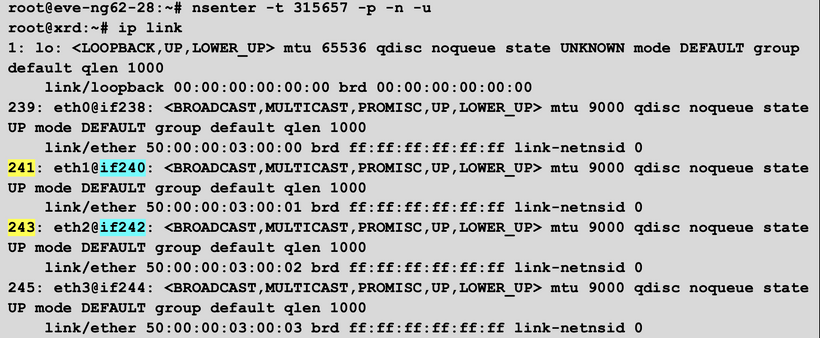
In this lab you can successfully ping both local and remote IP addresses, however SSH to the remote VM fail! Let’s try to troubleshoot it.
When attempting SSH from Linux VM1 to VM2 we can check TcpInSegs, TcpInErrs and TcpInCsumErrors counters on VM2 keep increment of the same amount (4 packets for each run).
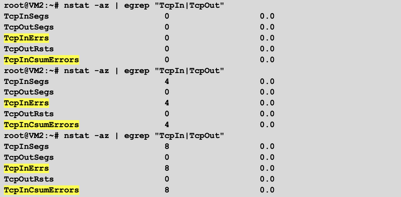
That means VM2 is receiving TCP SYN packets (segments) with an invalid TCP checksum. To confirm it, I used Linux ftrace framework exposed via trace-cmd frontend.
The virtual router instance connected to the Linux bridges is a Cisco XRd docker container running IOS-XR 7.10.2. From a networking perspective each docker container runs into a Linux network namespace other than the root (or default) network namespace. EVE-NG manages to create a veth pair for any ethernet link connected to it. In our scenario, a veth network device is connected to a Linux bridge within the root network namespace while the paired one lives within the container’s dedicated network namespace. By using ftrace we can dig into the Linux sk_buff kernel structures involved, by checking the value of ip_summed field we’re interested in (skb → ip_summed).
From Linux host viewpoint, ftrace reports TCP SYN packets handled from VM1 ethernet TAP backend in the RX path as seen with ip_summed set to 3 while TCP packets handled in RX path from veth device connected to the remote bridge as seen with ip_summed set to 0.
From Linux kernel C header files /include/linux/skbuff.h
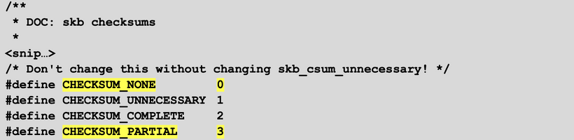
Those values correspond to CHECKSUM_PARTIAL and CHECKSUM_NONE respectively. To get a clear understanding of what was really going on, I asked on stackoverflow opening this discussion.
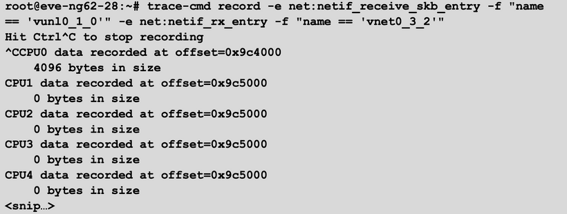
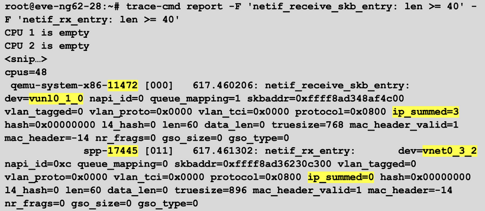
Linux ftrace framework allows us to enable static tracepoints built inside the kernel. Here tracepoints netif_receive_skb_entry, netif_rx_entry within the relevant kernel network functions implemented by the host Linux kernel and exposed to the low-level device driver code have been enabled. Next in the reporting step the tracing file (trace.dat) has been filtered using the -F option (inessential trace entries for ARP request and reply were filtered).
According to the above trace, qemu-system-x86-11472 process with PID 11472 is the main thread (Linux lightweighted processes) running VM1’s QEMU instance. The RX path processing on vunl0_1_0 TAP interface is run in the context of this process (note that EVE-NG assigned node-id 1 to VM1 node hence the name vunl0_1_0 for the VM1virtual ethernet’s backend).
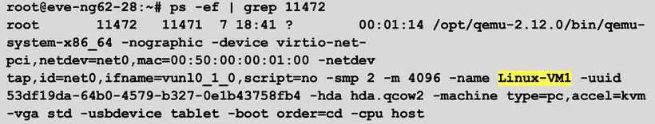
Likewise, spp-17445 is the Pid for the thread running within the XRd docker container. This thread runs the driver code handling the RX path processing for the vnet0_3_2 veth device paired with the corresponding veth device within the XRd container’s network namespace (even in this case EVE-NG assigned node-id 3 to the XRd node).
As we can see, attempting to SSH from VM1 to VM2 results in VM1 sending out TCP SYN packets having the sk_buff’s ip_summed field set to 3 (CHECKSUM_PARTIAL). That means VM1 kernel network stack is sending out TCP packets with an incomplete/incorrect TCP checksum.
After spending many hours troubleshooting, I identified the issue: by default, VM’s exposed ethernet interfaces (e.g. e1000 or virtio-net) have TCP/UDP checksum offloading enabled. Namely Linux kernel network stack assumes that the underlying “NIC hardware” will compute and fill in the correct TCP/UDP checksum into outgoing packets.
The problem is that the virtual NIC, in its TX path, does not perform that computation at all. As a result, TCP/UDP packets are sent with zeroed or corrupted checksum fields. On the receiving side, in RX path processing, they are delivered to the VM Linux kernel’s network stack that discards these invalid packets.
The Fix¶
The solution is straightforward: disable TX checksum offloading at the virtual NIC level. This can be done from within the Linux VM as follows (note that disabling RX checksum offloading is not an option since it is not configurable).
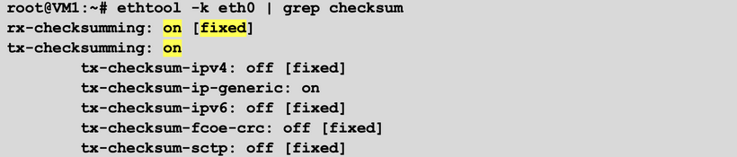
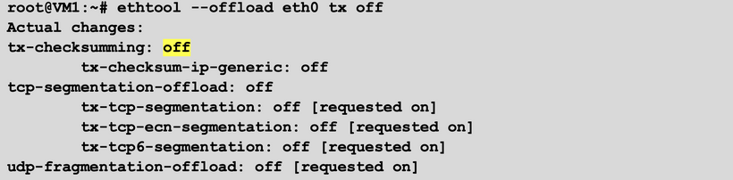
Of course we need to do the same on the remote Linux VM:
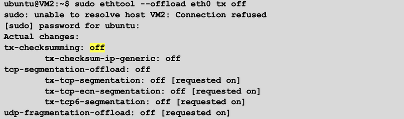
And voilà, magically SSH to the remote VM works!
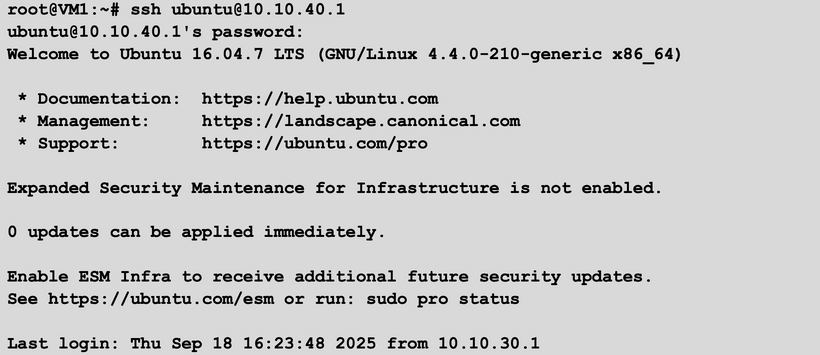
To be honest, a different kind of fix is available. According to Cisco documentation there is an optional flag (chksum) applicable for XRd interfaces. It can be set on interfaces basis by setting the relevant Linux environment variables passed to the container (XR_MGMT_INTERFACES for management interfaces and XR_INTERFACES for dataplane interfaces). It is supposed to force the virtual router to compute the relevant TCP/UDP checksum for ingress packets coming from that interface.
Let’s check the current setting for those environment variables:
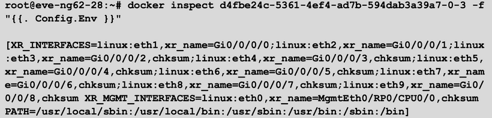
From the above XR_INTERFACE environment variable, the chksum flag is clear for the first two XRd interfaces (Gi0/0/0/0 and Gi0/0/0/1) used in the lab. Let’s try to set the chksum flag for the Gi0/0/0/0 interface only (the XRd ingress interface for traffic coming from VM1 to VM2). To do it, we proceed to stop & wipe the XRd node. This way the XRd docker container is restarted from scratch.
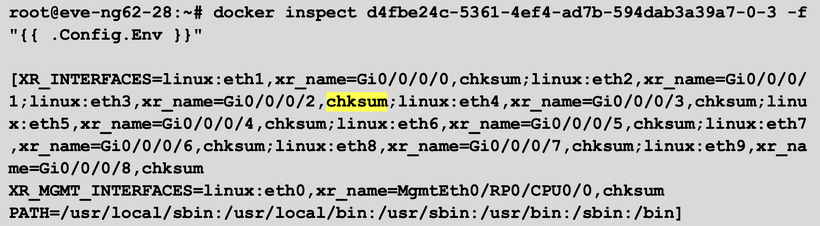
Attempt to SSH to VM2 still fails, however we can confirm TCP packets get received from VM2 with the correct TCP checksum (TcpInErrs or TcpInCsumErrors no longer keep incrementing on VM2).
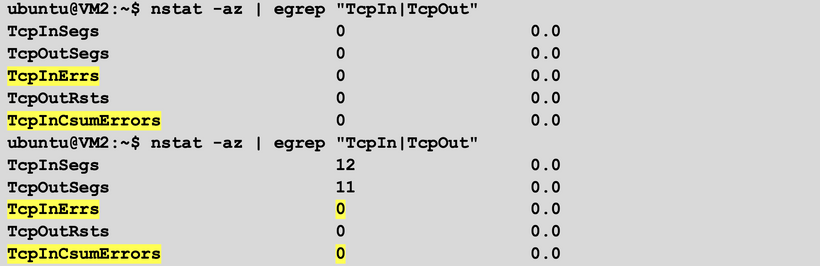
In the next step we fix the issue the other way around by setting the chksum flag for the Gi0/0/0/1 interface
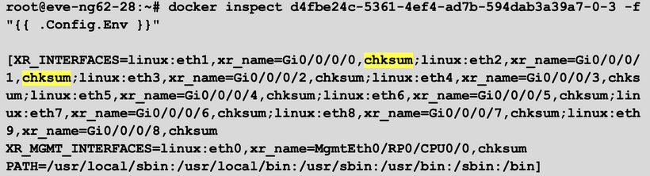
And eventually it does work as well !
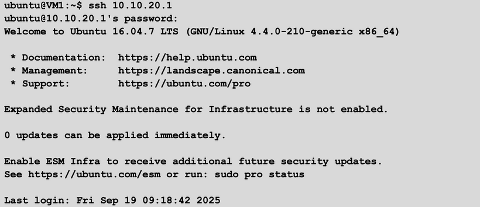